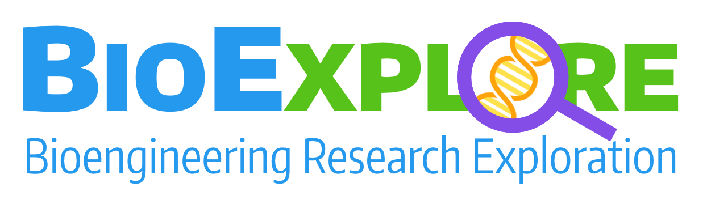
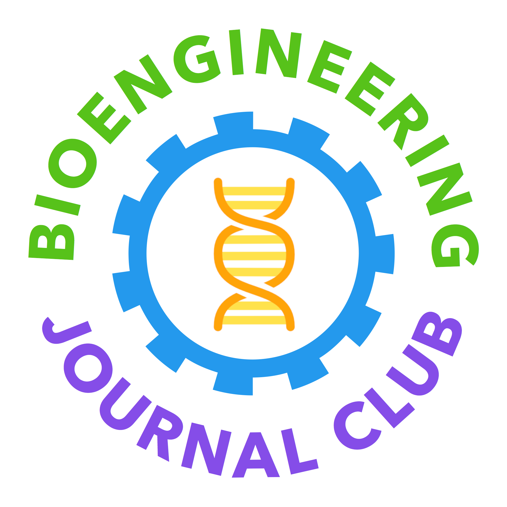

I launched BioExplore as an initiative to increase support for students interested in bioengineering-related research. In its inaugural year, I led the club in coordinating workshops, lab tours, and presentations to provide tools to help undergraduates get involved in research. My work on BioExplore was recognized with a Mary Gates Leadership Scholarship.
Website
I launched the Bioengineering Journal Club (BJC) to provide an inclusive venue for students to learn about and share their passions for cutting-edge research in bioengineering. We held biweekly meetings in which researchers described their work and presented a paper for discussion. In collaboration wth faculty and advisors, BJC was reinvisioned as BioExplore after a successful pilot year.
WebsiteThe International Brain Bee was founded in 1998 by Dr. Norbert Myslinski at the University of Maryland with the mission of inspiring generations of young students to pursue studies in neuroscience and related fields. The Pacific Northwest Brain Bee is a local chapter competition open to students in grades 9-12 from Washington, Oregon, and Idaho. After taking first place in the Pacific Northwest Brain Bee, I now return to volunteer annually, encouraging students to learn about neuroscience in high school.
Website